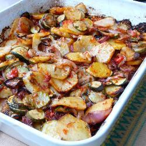

Briam

Briam vertegenwoordigt hoe de Griekse keuken een paar simpele ingrediënten kan omtoveren tot een heerlijke maaltijd, zonder al te veel inspanning, Dit is een traditionele ovenschotel met aardappel en courgette en met olijfolie als enige bron van vet, Serveer indien gewenst met wat feta.
ingrediënten
1 kilo aardappels, geschild en in plakjes van 3mm
4 grote courgettes, in plakjes van 3mm
4 middelgrote rode uien, in plakjes van 3mm
6 roma tomaten, gepureerd
125 ml olijfolie
2 eetlepels versgehakte peterselie
ruim zeezout en zwarte peper
Bereidingswijze
Verwarm de oven voor tot 200 C / hetelucht 180 C / gas 4, Neem de grootste ovenschaal die je hebt - 22x33 cm of groter, je wilt niet dat er teveel lagen groenten over elkaar liggen (gebruik 2 schalen indien nodig).
Leg de aardappel, courgette en rode ui in de ovenschaal.
Schenk de gepureerde tomaat en olijfolie erover en bestrooi met peterselie.
Voeg zout en versgemalen zwarte peper naar smaak toe. Roer de ingrediënten om zodat de groenten overal bedekt is. Voeg ten slotte 100 ml water toe aan de schaal.
Bak de ovenschotel 90 minuten in de voorverwarmde oven, roer na 1 uur de groenten om en voeg eventueel een beetje water toe indien nodig (er hoort geen water meer in te zitten aan het eind).
Op dit moment proef ik de groenten ook altijd, om te controleren of er nog wat kruiden of peper en zout aan toegevoegd moet worden.
Laat iets afkoelen of serveer op kamertemperatuur.
Klik HIER om terug te gaan naar de hoofdpagina.